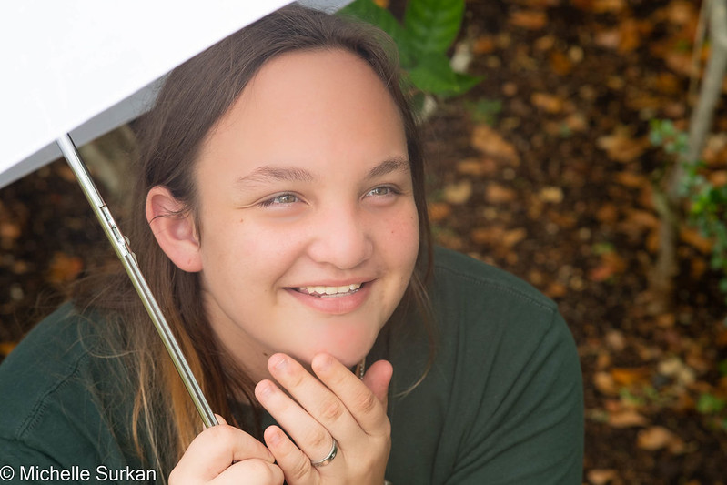
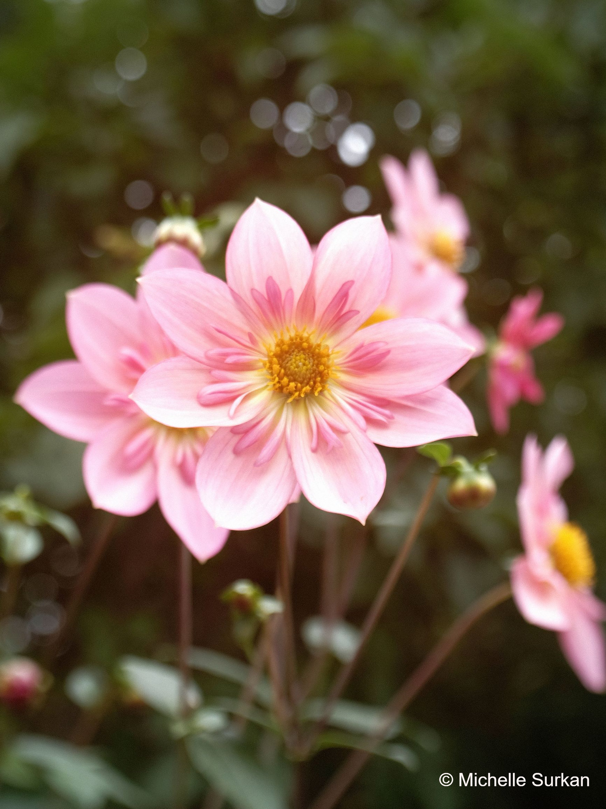
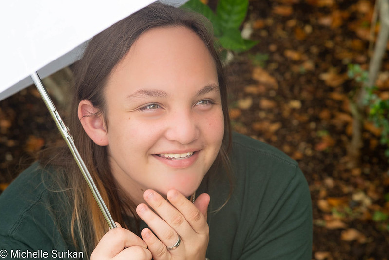
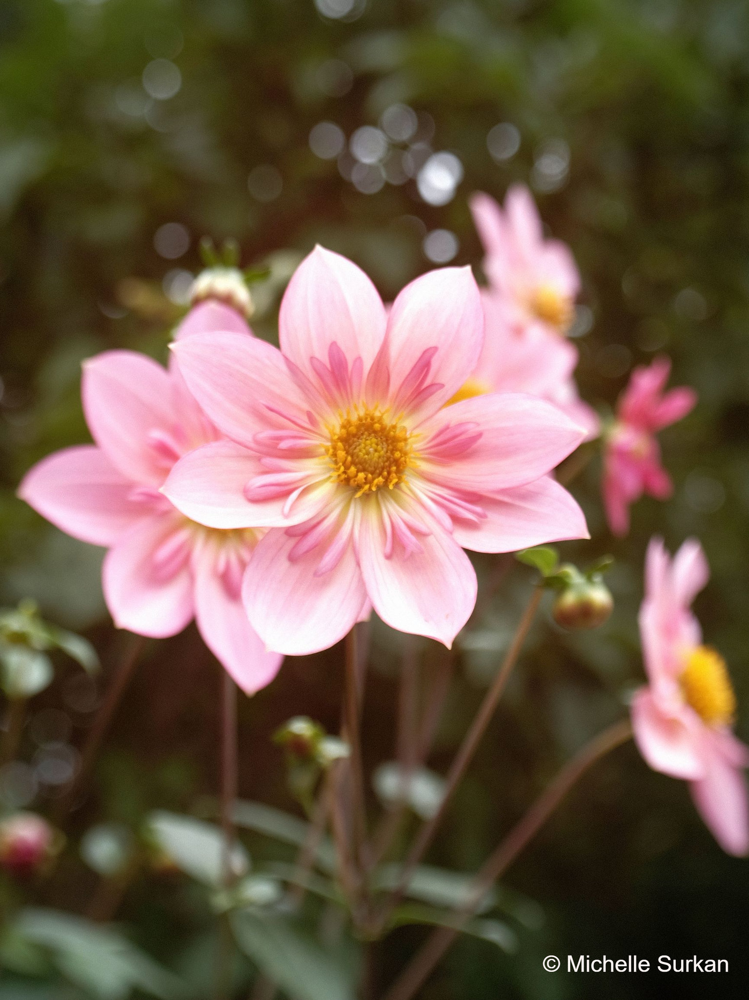

About Me:
Hi! I am a photographer based in Bellevue, Washington. I learned my craft from photographer and teacher Ray Pfortner and specialize in portraits. I am constantly inspired by the world around me and love capturing the unique beauty of each and every one of my subjects. Whether it's a family portrait, senior photo, or engagement session, I strive to create images that are genuine and full of emotion. I am always looking for new ways to improve my craft and push the boundaries of traditional portrait photography. Thank you for considering me for your photography needs.